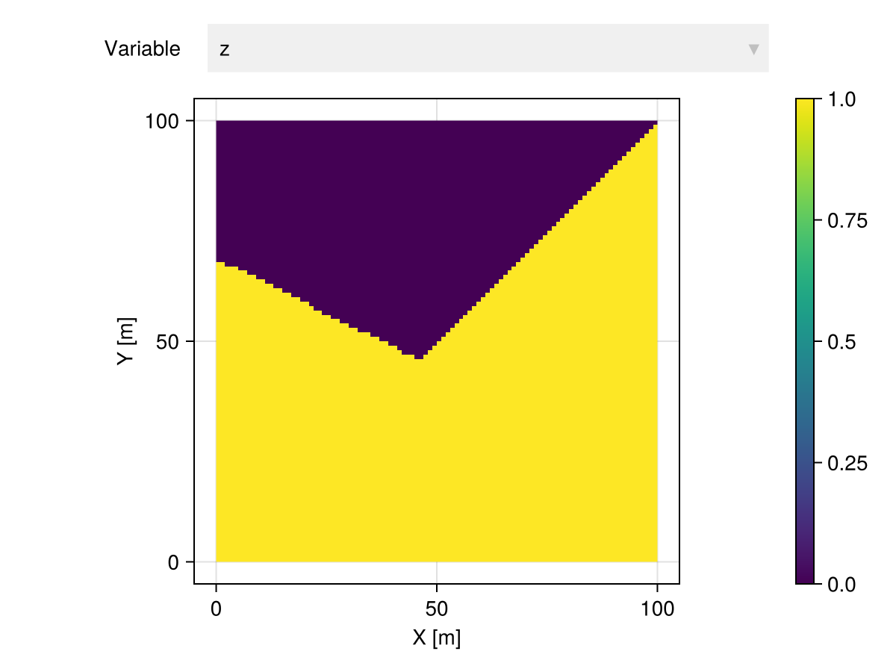
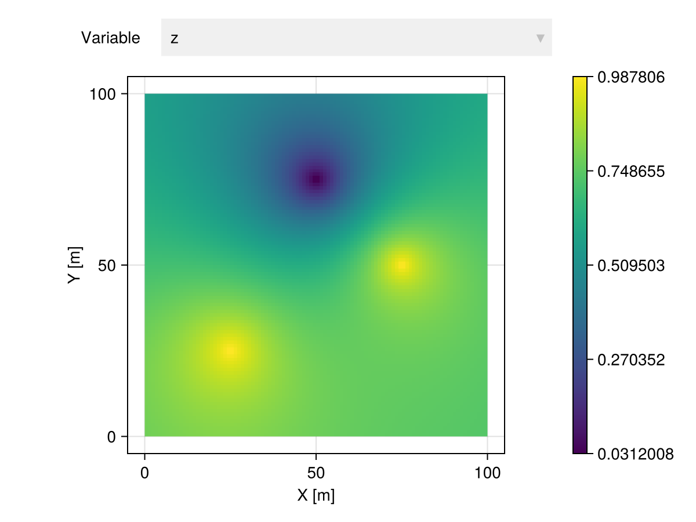
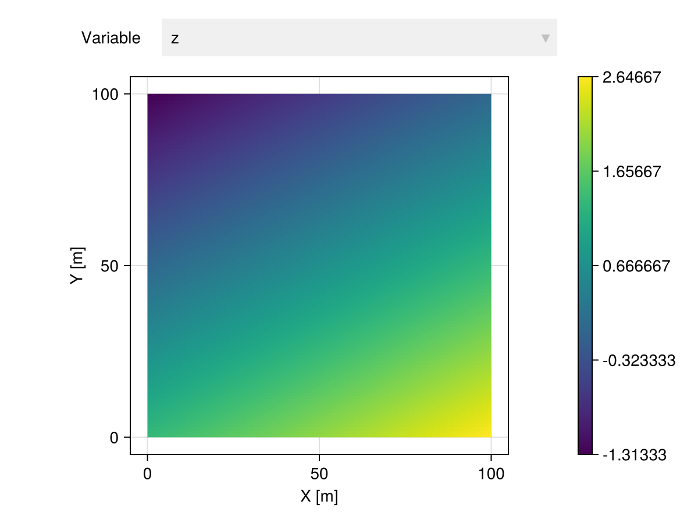
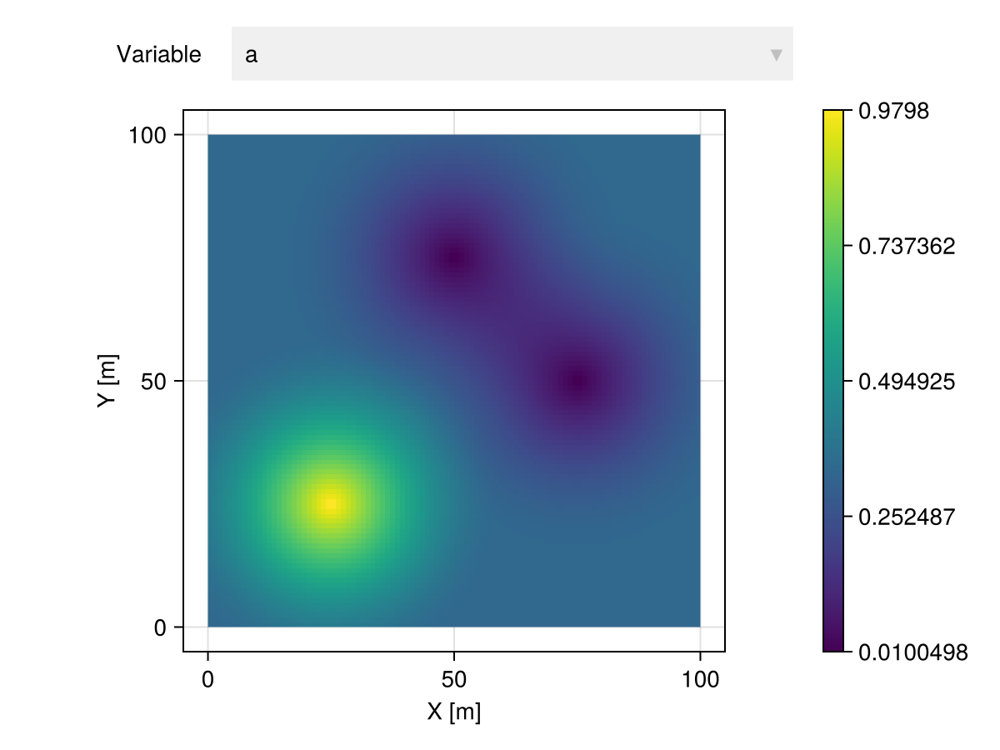
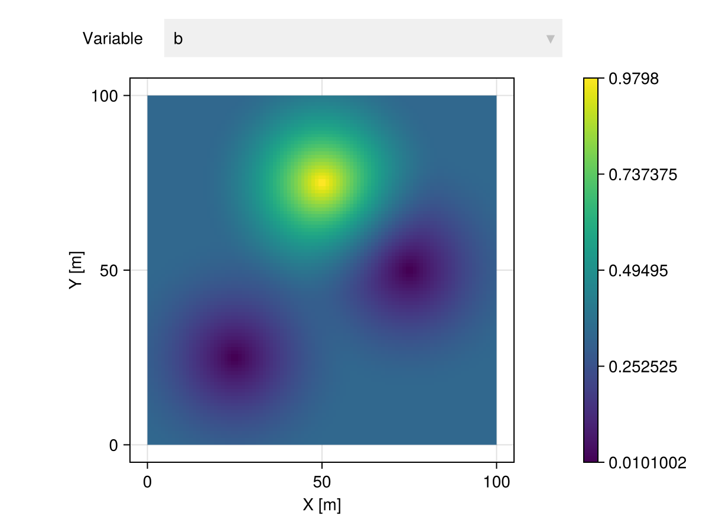
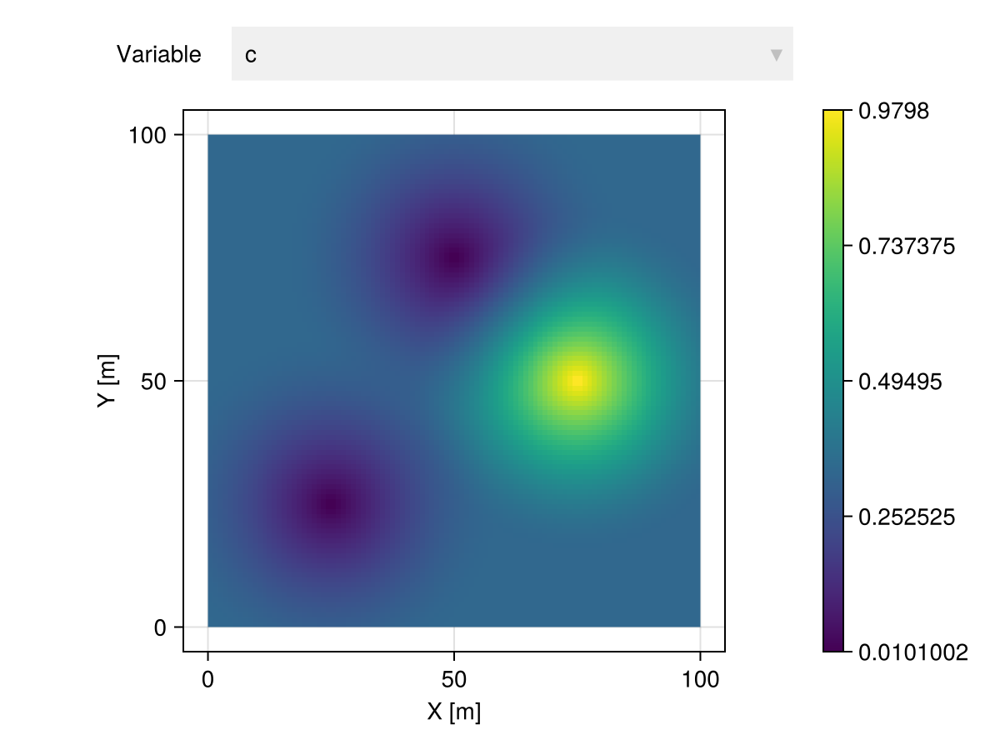
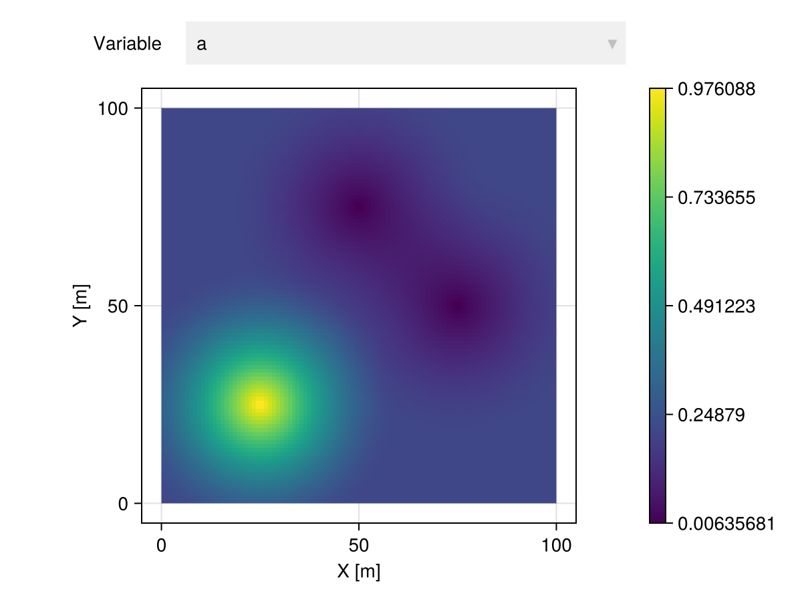
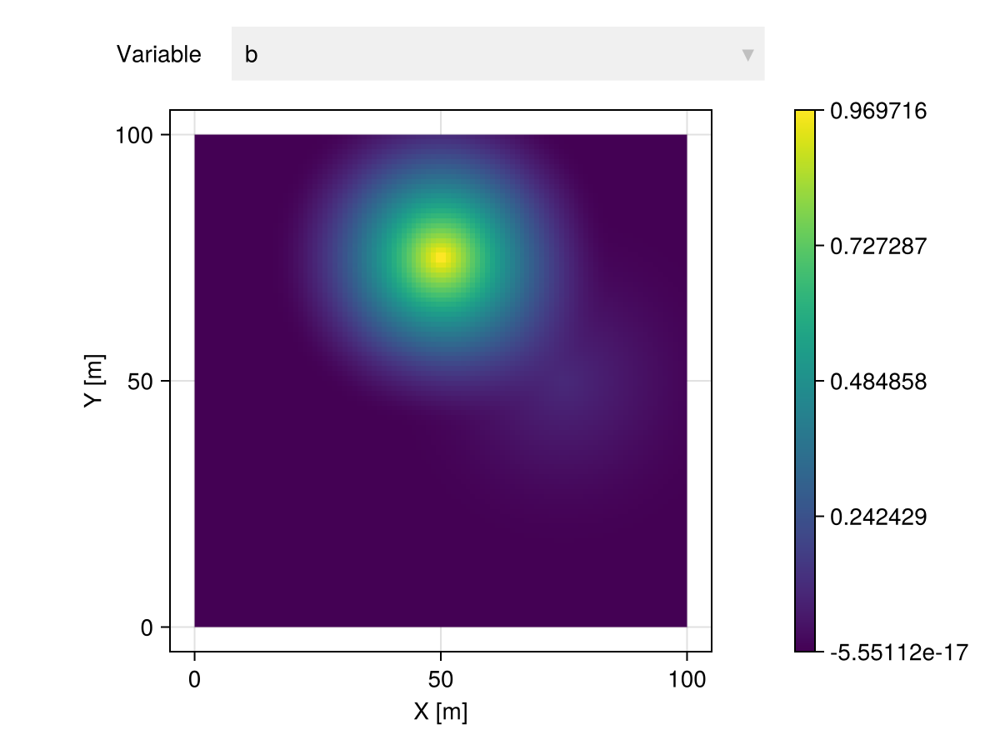
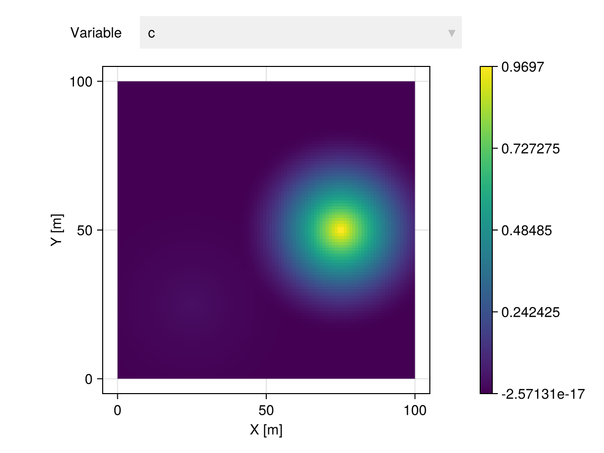

Interpolation
Overview
Geostatistical interpolation models can be used to predict variables over geospatial domains. These models are used within the Interpolate and InterpolateNeighbors transforms with advanced options for change of support, probabilistic prediction and neighborhood search.
GeoStatsTransforms.Interpolate — Type
Interpolate(domain; [options])Interpolate geotable on given domain (or vector of geometries) using a set of options.
Options
model- Model from GeoStatsModels.jl (default toNN())point- Perform interpolation on point support (default totrue)prob- Perform probabilistic interpolation (default tofalse)
Examples
# nearest neighbor model
Interpolate(grid, model=NN())
# inverse distance weighting model
Interpolate(pset, model=IDW())Notes
The interpolation is performed with all the samples (i.e. rows of the geotable) at once, which can be prohibitive for some models like Kriging. If that is the case, prefer InterpolateNeighbors.
See also InterpolateNeighbors.
GeoStatsTransforms.InterpolateNeighbors — Type
InterpolateNeighbors(domain; [options])Interpolate geotable with neighbor search on given domain (or vector of geometries) using a set of options.
Options
model- Model from GeoStatsModels.jl (default toNN())point- Perform interpolation on point support (default totrue)prob- Perform probabilistic interpolation (default tofalse)minneighbors- Minimum number of neighbors (default to1)maxneighbors- Maximum number of neighbors (default to10)neighborhood- Search neighborhood (default tonothing)distance- A distance defined in Distances.jl (default toEuclidean())
Two neighbor search methods are available:
If a
neighborhoodis provided, local prediction is performed by sliding theneighborhoodin the domain (e.g.MetricBall).If a
neighborhoodis not provided, the prediction is performed usingmaxneighborsnearest neighbors according todistance.
Examples
# polynomial model with 10 nearby samples
InterpolateNeighbors(grid, model=Polynomial(), maxneighbors=10)
# inverse distance weighting model with samples inside 100m radius
InterpolateNeighbors(pset, model=IDW(), neighborhood=MetricBall(100u"m"))Notes
The interpolation is performed with a subset of nearby samples. This can lead to undesired artifacts, specially when the number of samples is small. If that is that case, prefer Interpolate.
See also Interpolate.
All models work with general Hilbert spaces, meaning that it is possible to interpolate any data type that implements scalar multiplication, vector addition and inner product:
The framework also provides a low-level interface for advanced users who might need to GeoStatsModels.fit and GeoStatsModels.predict (or GeoStatsModels.predictprob) models in non-standard ways:
GeoStatsModels.fit — Function
fit(model, geotable)Fit geostatistical model to geotable and return a fitted geostatistical model.
GeoStatsModels.predict — Function
predict(model, vars, gₒ)Predict one or multiple variables vars at geometry gₒ with fitted geostatistical model.
GeoStatsModels.predictprob — Function
predictprob(model, vars, gₒ)Predict distribution of one or multiple variables vars at geometry gₒ with fitted geostatistical model.
For model validation, including cross-validation error estimates, please check the Validation section.
Models
We illustrate the models with the following geotable and grid:
gtb = georef((; z=[1.,0.,1.]), [(25.,25.), (50.,75.), (75.,50.)])| 3×2 GeoTable over 3 PointSet | |
| z | geometry |
|---|---|
| Continuous | Point |
| [NoUnits] | 🖈 Cartesian{NoDatum} |
| 1.0 | (x: 25.0 m, y: 25.0 m) |
| 0.0 | (x: 50.0 m, y: 75.0 m) |
| 1.0 | (x: 75.0 m, y: 50.0 m) |
grid = CartesianGrid(100, 100)100×100 CartesianGrid
├─ minimum: Point(x: 0.0 m, y: 0.0 m)
├─ maximum: Point(x: 100.0 m, y: 100.0 m)
└─ spacing: (1.0 m, 1.0 m)NN
GeoStatsModels.NN — Type
NN(distance=Euclidean())A model that assigns the nearest non-missing value from neighbors.
itp = gtb |> Interpolate(grid, model=NN())
itp |> viewer
IDW
GeoStatsModels.IDW — Type
IDW(exponent=1, distance=Euclidean())The inverse distance weighting model introduced in the very early days of geostatistics by Shepard 1968.
The weights are computed as λᵢ = 1 / d(x, xᵢ)ᵉ for a given distance denoted by d and exponent denoted by e.
References
itp = gtb |> Interpolate(grid, model=IDW())
itp |> viewer
LWR
GeoStatsModels.LWR — Type
LWR(weightfun=h -> exp(-3 * h^2), distance=Euclidean())The locally weighted regression (a.k.a. LOESS) model introduced by Cleveland 1979. It is the most natural generalization of IDW in which one is allowed to use a custom weight function instead of distance-based weights.
References
Stone 1977. Consistent non-parametric regression
Cleveland 1979. Robust locally weighted regression and smoothing scatterplots
Cleveland & Grosse 1991. Computational methods for local regression
itp = gtb |> Interpolate(grid, model=LWR())
itp |> viewer
Polynomial
GeoStatsModels.Polynomial — Type
Polynomial(degree=1)A polynomial model with coefficients obtained via regression.
itp = gtb |> Interpolate(grid, model=Polynomial())
itp |> viewer
Kriging
A Kriging model has the form:
\[\hat{Z}(\p_0) = \lambda_1 Z(\p_1) + \lambda_2 Z(\p_2) + \cdots + \lambda_n Z(\p_n),\quad \p_i \in \R^m, \lambda_i \in \R\]
with $Z\colon \R^m \times \Omega \to \R$ a random field.
This package implements the following Kriging variants:
- Simple Kriging
- Ordinary Kriging
- Universal Kriging
which can be materialized in code with the generic Kriging constructor.
GeoStatsModels.Kriging — Function
Kriging(fun, mean)Equivalent to SimpleKriging.
Kriging(fun)Equivalent to OrdinaryKriging.
Kriging(fun, drifts)Equivalent to UniversalKriging.
Kriging(fun, deg, dim)Equivalent to UniversalKriging.
Please check the docstring of corresponding models for more details.
model = Kriging(GaussianVariogram(range=35.))
itp = gtb |> Interpolate(grid, model=model)
itp |> viewer
Kriging models depend on geostatistical functions (e.g., variograms). We support a wide variety of permissible functions documented in the Variograms, Covariances and Transiograms sections.
Simple Kriging
GeoStatsModels.SimpleKriging — Type
SimpleKriging(fun, mean)Simple Kriging with geostatistical function fun and constant mean.
Examples
# univariate model with mean 5.0
SimpleKriging(SphericalVariogram(), 5.0)
# multivariate model with mean [5.0, 10.0]
SimpleKriging(I(2) * SphericalVariogram(), [5.0, 10.0])See also OrdinaryKriging and UniversalKriging for related Kriging models and the general Kriging constructor that selects the appropriate variant as a function of the arguments.
Notes
Simple Kriging requires stationary geostatistical function.
In Simple Kriging, the mean $\mu$ of the random field is assumed to be constant and known. The resulting linear system is:
\[\begin{bmatrix} cov(\p_1,\p_1) & cov(\p_1,\p_2) & \cdots & cov(\p_1,\p_n) \\ cov(\p_2,\p_1) & cov(\p_2,\p_2) & \cdots & cov(\p_2,\p_n) \\ \vdots & \vdots & \ddots & \vdots \\ cov(\p_n,\p_1) & cov(\p_n,\p_2) & \cdots & cov(\p_n,\p_n) \end{bmatrix} \begin{bmatrix} \lambda_1 \\ \lambda_2 \\ \vdots \\ \lambda_n \end{bmatrix} = \begin{bmatrix} cov(\p_1,\p_0) \\ cov(\p_2,\p_0) \\ \vdots \\ cov(\p_n,\p_0) \end{bmatrix}\]
or in matricial form $\C\l = \c$. We subtract the given mean from the observations $\boldsymbol{y} = \z - \mu \1$ and compute the mean and variance at location $\p_0$:
\[\mu(\p_0) = \mu + \boldsymbol{y}^\top \l\]
\[\sigma^2(\p_0) = cov(0) - \c^\top \l\]
Ordinary Kriging
GeoStatsModels.OrdinaryKriging — Type
OrdinaryKriging(fun)Ordinary Kriging with geostatistical function fun.
Examples
# univariate model with unknown mean
OrdinaryKriging(SphericalVariogram())
# multivariate model with unknown mean
OrdinaryKriging(I(2) * SphericalCovariance())See also SimpleKriging and UniversalKriging for related Kriging models and the general Kriging constructor that selects the appropriate variant as a function of the arguments.
In Ordinary Kriging the mean of the random field is assumed to be constant and unknown. The resulting linear system is:
\[\begin{bmatrix} \G & \1 \\ \1^\top & 0 \end{bmatrix} \begin{bmatrix} \l \\ \nu \end{bmatrix} = \begin{bmatrix} \g \\ 1 \end{bmatrix}\]
with $\nu$ the Lagrange multiplier associated with the constraint $\1^\top \l = 1$. The mean and variance at location $\p_0$ are given by:
\[\mu(\p_0) = \z^\top \l\]
\[\sigma^2(\p_0) = \begin{bmatrix} \g \\ 1 \end{bmatrix}^\top \begin{bmatrix} \l \\ \nu \end{bmatrix}\]
Universal Kriging
GeoStatsModels.UniversalKriging — Type
UniversalKriging(fun, drifts)Universal Kriging with geostatistical function fun and drifts. A drift is a function p -> v that maps a point p to a scalar value v.
UniversalKriging(fun, deg, dim)Alternatively, construct monomial drifts up to given degree deg for dim geospatial coordinates. For example, if the data is mapped with (x, y) Cartesian coordinates, then dim=2 and setting deg=1 will add the monomials 1, x, and y as drift functions to the mean 1 + β₁x + β₂y, while setting deg=2 will lead to a quadratic mean 1 + β₁x + β₂y + β₃x² + β₄xy + β₅y². The same logic applies to (ϕ, λ) LatLon coordinates or any other type of geospatial coordinates.
Examples
# univariate model with mean 1 + β₁x + β₂y where x and y are Cartesian coordinates
UniversalKriging(SphericalVariogram(), [p -> 1, p -> coords(p).x, p -> coords(p).y])
# multivariate model with mean 1 + βx² where x is the first Cartesian coordinate
UniversalKriging(I(2) * SphericalVariogram(), [p -> 1, p -> coords(p).x^2])See also SimpleKriging and OrdinaryKriging for related Kriging models and the general Kriging constructor that selects the appropriate variant as a function of the arguments.
Notes
Drift functions should be smooth for numerical stability.
Include a constant drift (e.g. p -> 1) for unbiased estimation.
OrdinaryKriging is recovered with drifts = [p -> 1].
In Universal Kriging, the mean of the random field is assumed to be a linear combination of known smooth functions. For example, it is common to assume
\[\mu(\p) = \sum_{k=1}^{N_d} \beta_k f_k(\p)\]
with $N_d$ monomials $f_k$ of degree up to $d$. For example, in 2D there are $6$ monomials of degree up to $2$:
\[\mu(x_1,x_2) = \beta_1 1 + \beta_2 x_1 + \beta_3 x_2 + \beta_4 x_1 x_2 + \beta_5 x_1^2 + \beta_6 x_2^2\]
The choice of the degree $d$ determines the size of the polynomial matrix
\[\F = \begin{bmatrix} f_1(\p_1) & f_2(\p_1) & \cdots & f_{N_d}(\p_1) \\ f_1(\p_2) & f_2(\p_2) & \cdots & f_{N_d}(\p_2) \\ \vdots & \vdots & \ddots & \vdots \\ f_1(\p_n) & f_2(\p_n) & \cdots & f_{N_d}(\p_n) \end{bmatrix}\]
and polynomial vector $\f = \begin{bmatrix} f_1(\p_0) & f_2(\p_0) & \cdots & f_{N_d}(\p_0) \end{bmatrix}^\top$.
The variogram determines the variogram matrix:
\[\G = \begin{bmatrix} \gamma(\p_1,\p_1) & \gamma(\p_1,\p_2) & \cdots & \gamma(\p_1,\p_n) \\ \gamma(\p_2,\p_1) & \gamma(\p_2,\p_2) & \cdots & \gamma(\p_2,\p_n) \\ \vdots & \vdots & \ddots & \vdots \\ \gamma(\p_n,\p_1) & \gamma(\p_n,\p_2) & \cdots & \gamma(\p_n,\p_n) \end{bmatrix}\]
and the variogram vector $\g = \begin{bmatrix} \gamma(\p_1,\p_0) & \gamma(\p_2,\p_0) & \cdots & \gamma(\p_n,\p_0) \end{bmatrix}^\top$.
The resulting linear system is:
\[\begin{bmatrix} \G & \F \\ \F^\top & \boldsymbol{0} \end{bmatrix} \begin{bmatrix} \l \\ \boldsymbol{\nu} \end{bmatrix} = \begin{bmatrix} \g \\ \f \end{bmatrix}\]
with $\boldsymbol{\nu}$ the Lagrange multipliers associated with the universal constraints. The mean and variance at location $\p_0$ are given by:
\[\mu(\p_0) = \z^\top \l\]
\[\sigma^2(\p_0) = \begin{bmatrix}\g \\ \f\end{bmatrix}^\top \begin{bmatrix}\l \\ \boldsymbol{\nu}\end{bmatrix}\]
CoKriging
All the Kriging variants are well-defined in the multivariate setting. We can use multivariate variograms (or covariances) in a linear model of coregionalization, or transiograms to perform multivariate interpolation:
# 3 variables
table = (; a=[1.0, 0.0, 0.0], b=[0.0, 1.0, 0.0], c=[0.0, 0.0, 1.0])
coord = [(25.0, 25.0), (50.0, 75.0), (75.0, 50.0)]
# 3x3 variogram
γ = [1.0 0.3 0.1; 0.3 1.0 0.2; 0.1 0.2 1.0] * SphericalVariogram(range=35.)
gtb = georef(table, coord)
itp = gtb |> Interpolate(grid, model=Kriging(γ))| 10000×4 GeoTable over 100×100 CartesianGrid | |||
| a | b | c | geometry |
|---|---|---|---|
| Continuous | Continuous | Continuous | Quadrangle |
| [NoUnits] | [NoUnits] | [NoUnits] | 🖈 Cartesian{NoDatum} |
| 0.333434 | 0.333283 | 0.333283 | Quadrangle((x: 0.0 m, y: 0.0 m), ..., (x: 0.0 m, y: 1.0 m)) |
| 0.334227 | 0.332887 | 0.332887 | Quadrangle((x: 1.0 m, y: 0.0 m), ..., (x: 1.0 m, y: 1.0 m)) |
| 0.335753 | 0.332124 | 0.332124 | Quadrangle((x: 2.0 m, y: 0.0 m), ..., (x: 2.0 m, y: 1.0 m)) |
| 0.337943 | 0.331028 | 0.331028 | Quadrangle((x: 3.0 m, y: 0.0 m), ..., (x: 3.0 m, y: 1.0 m)) |
| 0.340729 | 0.329635 | 0.329635 | Quadrangle((x: 4.0 m, y: 0.0 m), ..., (x: 4.0 m, y: 1.0 m)) |
| 0.344041 | 0.327979 | 0.327979 | Quadrangle((x: 5.0 m, y: 0.0 m), ..., (x: 5.0 m, y: 1.0 m)) |
| 0.347808 | 0.326096 | 0.326096 | Quadrangle((x: 6.0 m, y: 0.0 m), ..., (x: 6.0 m, y: 1.0 m)) |
| 0.351958 | 0.324021 | 0.324021 | Quadrangle((x: 7.0 m, y: 0.0 m), ..., (x: 7.0 m, y: 1.0 m)) |
| 0.356419 | 0.32179 | 0.32179 | Quadrangle((x: 8.0 m, y: 0.0 m), ..., (x: 8.0 m, y: 1.0 m)) |
| 0.361119 | 0.31944 | 0.31944 | Quadrangle((x: 9.0 m, y: 0.0 m), ..., (x: 9.0 m, y: 1.0 m)) |
| ⋮ | ⋮ | ⋮ | ⋮ |
itp |> Select("a") |> viewer
itp |> Select("b") |> viewer
itp |> Select("c") |> viewer
Heterotopic settings are automatically detected in the presence of missing values:
# 3 variables with missing values
table = (; a=[1.0, 0.0, 0.0], b=[0.0, 1.0, missing], c=[missing, 0.0, 1.0])
gtb = georef(table, coord)
itp = gtb |> Interpolate(grid, model=Kriging(γ))| 10000×4 GeoTable over 100×100 CartesianGrid | |||
| a | b | c | geometry |
|---|---|---|---|
| Continuous | Continuous | Continuous | Quadrangle |
| [NoUnits] | [NoUnits] | [NoUnits] | 🖈 Cartesian{NoDatum} |
| 0.210962 | -1.92532e-17 | 5.23831e-6 | Quadrangle((x: 0.0 m, y: 0.0 m), ..., (x: 0.0 m, y: 1.0 m)) |
| 0.211901 | -1.91928e-17 | 4.64935e-5 | Quadrangle((x: 1.0 m, y: 0.0 m), ..., (x: 1.0 m, y: 1.0 m)) |
| 0.213707 | -9.59142e-18 | 0.000125878 | Quadrangle((x: 2.0 m, y: 0.0 m), ..., (x: 2.0 m, y: 1.0 m)) |
| 0.2163 | 1.92969e-17 | 0.000239852 | Quadrangle((x: 3.0 m, y: 0.0 m), ..., (x: 3.0 m, y: 1.0 m)) |
| 0.219598 | 1.97876e-17 | 0.000384824 | Quadrangle((x: 4.0 m, y: 0.0 m), ..., (x: 4.0 m, y: 1.0 m)) |
| 0.223519 | -9.28903e-18 | 0.000557152 | Quadrangle((x: 5.0 m, y: 0.0 m), ..., (x: 5.0 m, y: 1.0 m)) |
| 0.227977 | -9.17497e-18 | 0.000753151 | Quadrangle((x: 6.0 m, y: 0.0 m), ..., (x: 6.0 m, y: 1.0 m)) |
| 0.23289 | 1.96284e-18 | 0.000969093 | Quadrangle((x: 7.0 m, y: 0.0 m), ..., (x: 7.0 m, y: 1.0 m)) |
| 0.238171 | -8.07949e-18 | 0.00120122 | Quadrangle((x: 8.0 m, y: 0.0 m), ..., (x: 8.0 m, y: 1.0 m)) |
| 0.243734 | 1.22333e-17 | 0.00144576 | Quadrangle((x: 9.0 m, y: 0.0 m), ..., (x: 9.0 m, y: 1.0 m)) |
| ⋮ | ⋮ | ⋮ | ⋮ |
itp |> Select("a") |> viewer
itp |> Select("b") |> viewer
itp |> Select("c") |> viewer